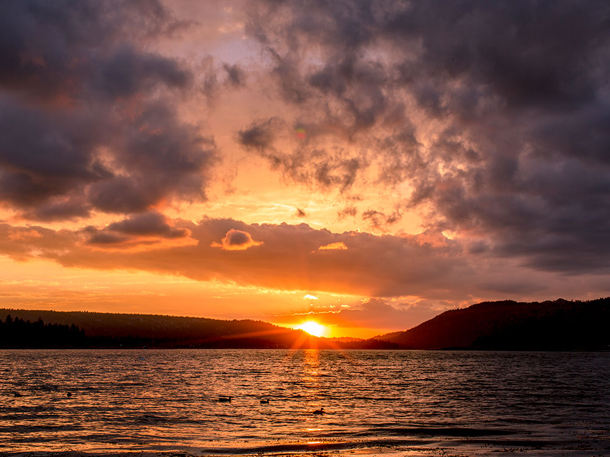
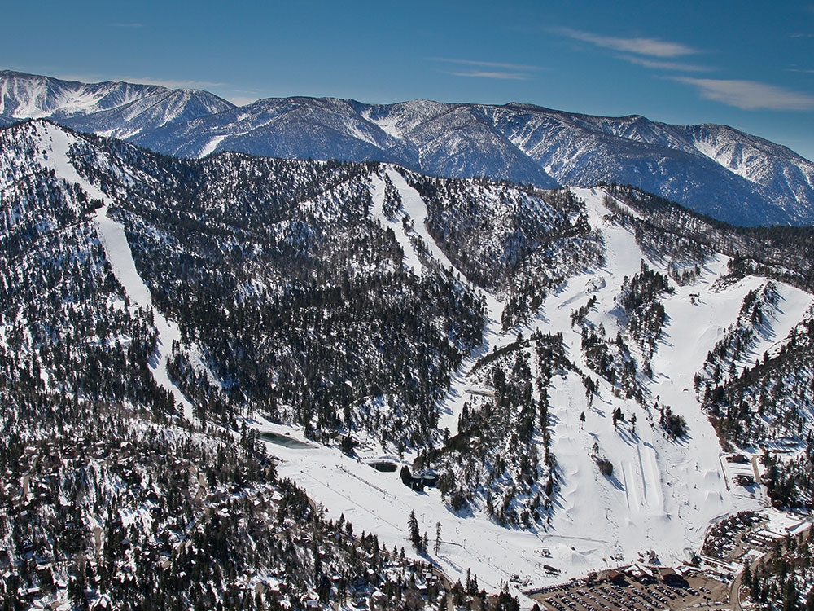
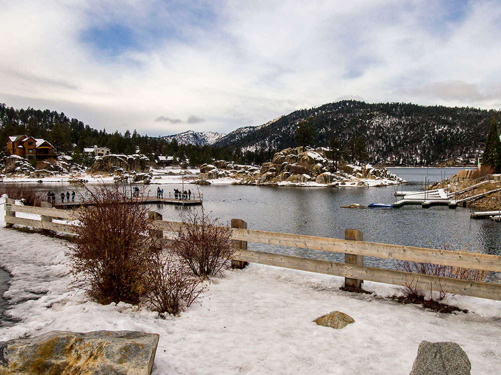
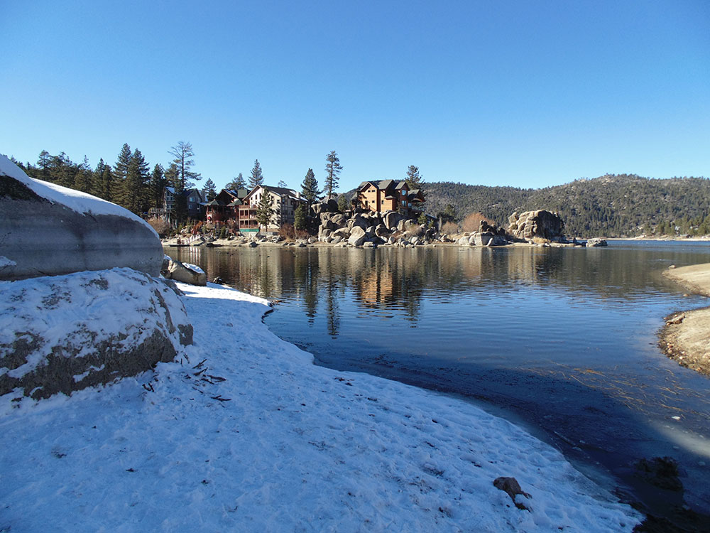
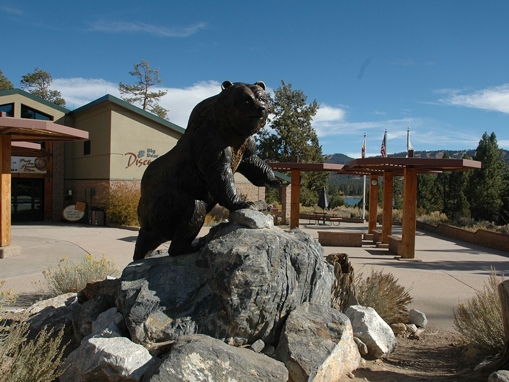
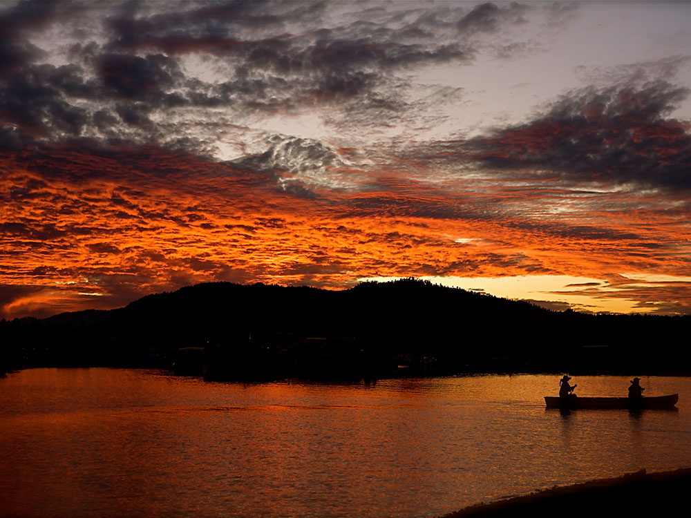
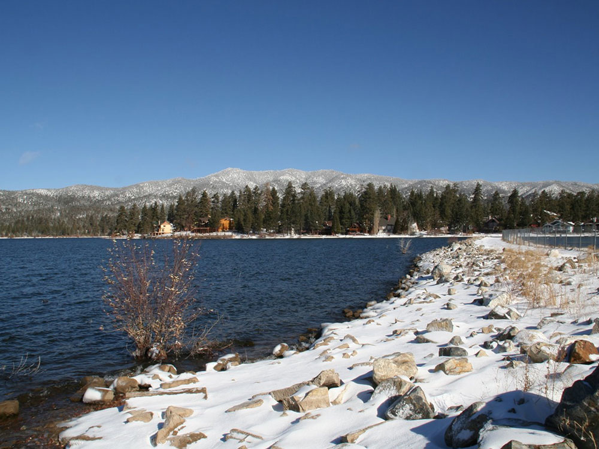
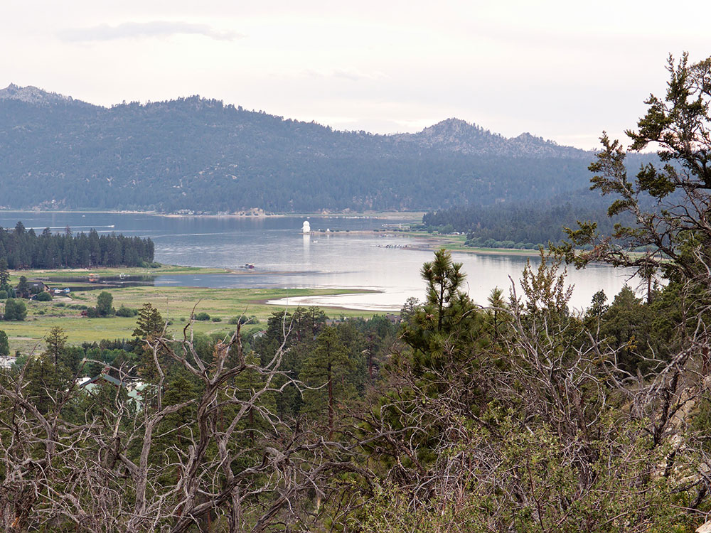
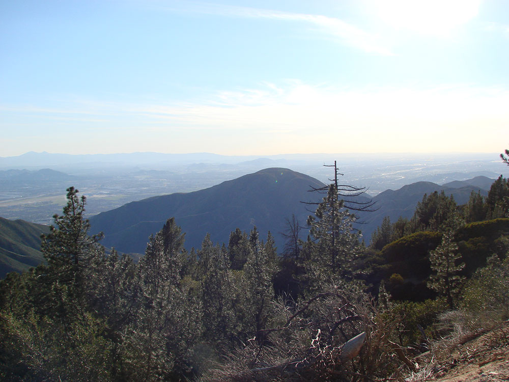

.jpg){kind=link}
Reservoir, located in the San Bernardino Mountains, is a snow and rain-fed lake, having no other means of tributaries
How to Get There
From Los Angeles (98 mi): Get on US-101 S from N Main St. Take I-10 E and CA-210 E/Foothill Fwy to CA-330 N in San Bernardino. Take exit 81 from CA-210 E/Foothill Fwy. Follow CA-330 N and CA-18 to Pine Knot Ave in Big Bear Lake
Overview
Big Bear Lake is one of Southern California's most popular year-round outdoor recreation destinations. Located in the San Bernardino Mountains at an elevation of approximately 6,750 feet, the area offers a combination of alpine scenery, lake activities, hiking, mountain biking, skiing, wildlife viewing, and charming mountain village attractions.
Things to Do
Enjoy Boating and Water Sports
Big Bear Lake serves as the centerpiece of the region and offers opportunities for boating, kayaking, paddleboarding, jet skiing, wakeboarding, sailing, and canoeing. Numerous marinas provide boat rentals and launch facilities for visitors looking to enjoy the water.
Go Fishing
The lake is known for excellent fishing opportunities throughout the year. Anglers can target trout, bass, catfish, bluegill, and other species from boats, docks, or shoreline access points around the lake.
Explore Big Bear Village
Big Bear Village serves as the area's main gathering place and features restaurants, cafes, specialty shops, breweries, entertainment venues, and seasonal events. Visitors can enjoy strolling through the village while experiencing the mountain town atmosphere.
Ride the Scenic Sky Chair
Snow Summit's Scenic Sky Chair transports visitors to higher elevations where they can enjoy panoramic views of Big Bear Lake, surrounding forests, and nearby mountain peaks. During summer and fall, the area also serves as a major mountain biking destination.
Experience Outdoor Recreation Year-Round
The Big Bear area offers hiking, mountain biking, horseback riding, camping, rock climbing, ziplining, and off-road exploration during the warmer months. Winter brings skiing, snowboarding, snowshoeing, tubing, and snow play opportunities at local resorts.
Visit Big Bear Alpine Zoo
The Big Bear Alpine Zoo is a unique rehabilitation facility that cares for injured, orphaned, and non-releasable wildlife. Visitors can observe bears, wolves, mountain lions, eagles, snow leopards, and numerous other animals native to mountain environments.
Drive Scenic Mountain Roads
Several scenic drives around Big Bear Lake provide outstanding views of forests, mountain ridges, granite formations, and the lake itself. Fall colors and winter snow often create especially picturesque landscapes.
Watch Sunrises and Sunsets Over the Lake
Big Bear Lake offers numerous viewpoints where visitors can enjoy beautiful sunrises and sunsets reflected on the water. Popular photography locations include Boulder Bay Park, Juniper Point, and Stanfield Marsh Wildlife Area.
Observe Wildlife
The forests surrounding Big Bear provide habitat for mule deer, black bears, bald eagles, coyotes, foxes, squirrels, and many bird species. Eagle-watching is particularly popular during the winter nesting season.
Top Trails
Castle Rock Trail
Length: Approximately 2.7 miles round trip
Elevation Gain: Approximately 800 feet
Difficulty: Moderate
One of the most popular hikes in the Big Bear area, Castle Rock Trail climbs through pine forest to a granite outcrop with excellent views of Big Bear Lake and the surrounding mountains.
Cougar Crest Trail
Length: Approximately 5.5 miles round trip
Elevation Gain: Approximately 1,000 feet
Difficulty: Moderate
This scenic trail follows a ridgeline above Big Bear Lake and provides panoramic views of the lake, forests, and surrounding mountain ranges. The trail also connects to portions of the Pacific Crest Trail.
Pine Knot Trail
Length: Approximately 6 miles round trip
Elevation Gain: Approximately 1,000 feet
Difficulty: Moderate
Starting near Big Bear Village, Pine Knot Trail climbs through forested terrain toward Grand View Point, offering sweeping vistas of Big Bear Valley and the San Bernardino Mountains.
Champion Lodgepole Pine Trail
Length: Approximately 1.5 miles round trip
Elevation Gain: Minimal
Difficulty: Easy
This family-friendly trail leads to one of the largest lodgepole pine trees in Southern California and provides a pleasant introduction to the area's mountain forest ecosystem.
Alpine Pedal Path
Length: Approximately 5 miles round trip
Elevation Gain: Minimal
Difficulty: Easy
A paved multi-use path along the north shore of Big Bear Lake, perfect for walking, jogging, biking, birdwatching, and enjoying lake views suitable for visitors of all ages.
Woodland Interpretive Trail
Length: Approximately 1.5 miles loop
Elevation Gain: Minimal
Difficulty: Easy
This nature trail features interpretive signs explaining local plants, wildlife, ecology, and geology while providing an easy and educational hiking experience.
Sources: Big Bear Lake tourism and visitor information covering lake recreation, boating, fishing, hiking, mountain biking, skiing, village attractions, and seasonal activities. https://www.bigbear.com
Additional information from the U.S. Forest Service San Bernardino National Forest visitor resources describing hiking trails, wildlife viewing, camping, scenic areas, and outdoor recreation opportunities around Big Bear Lake. https://www.fs.usda.gov/sbnf
Big Bear Lake is a reservoir, located in the San Bernardino Mountains. It is a snow and rain-fed lake, having no other means of tributaries.
Big Bear Lake is geophysically defined by its North and South Shore. Big Bear Boulevard follows the South Shore and leads into the Big Bear Valley as a continuation of Highway 18 (the so-called Rim of the World Highway, which approaches from the west). Big Bear Boulevard winds east through Papoose Bay, Boulder Bay and Metcalf Bay, then leads directly east to the city of Big Bear Lake. At a point called The Village, the road turns toward the lake and then curves eastward to Moonridge, the ski resorts at Snow Summit and Bear Mountain, and Stanfield Cutoff, a causeway located near the east end of the lake. Big Bear Boulevard then continues east into Big Bear City, which is an unincorporated community despite its name. Bear Creek and Siberia Creek flow into the lake and Bear Creek flows out of the lake, traveling about 9 miles (14 km) southwest to the Santa Ana River.
North Shore (Highway 38) begins at the Dam Junction of Highway 18. It travels east past the historic location of Gray's Landing, a famous 1920s fishing camp. It turns north around Grout Bay and travels through the small unincorporated town of Fawnskin. The road meanders across North Shore through Forestry lands, past the Big Bear Solar Observatory, past the Big Bear Discovery Center, past the Serrano Campground (U.S.F.S), accessing the public boat launch, and Stanfield Cutoff. North Shore Drive continues east into Big Bear City and Baldwin Lake.
The primary approach to Big Bear is via Highway 330 out of San Bernardino through Running Springs where it intersects Highway 18. Highway 18 proceeds past Arrowbear and Snow Valley, over 7,200 ft (2,190 m) Lake Vista Summit and across the 15 mi (24 km) "Arctic Circle" for a total distance of 33 mi (53 km). Big Bear Lake can also be accessed by Hwy 38 (referred to as 'The Backside') at the San Bernardino (10) Freeway near Redlands, and takes a 52 mi (84 km) mile route that passes through Big Bear City on the east. From north of Lucerne Valley, it can be accessed by Highway 18 over the pass into Baldwin Lake and through the north side, into Big Bear City.
Activities
Big Bear Lake provides an attractive setting for many outdoor activities, including fishing (trout, bluegill, crappie, catfish and largemouth bass), boating, and water skiing. Because of the very cold water and the presence of underwater obstacles near the shorelines, swimming is discouraged.
Points of interest
- North Shore (west to east)
- Fawnskin (San Bernardino County uninc.)
- Big Bear Solar Observatory (New Jersey Institute of Technology)
- Big Bear Discovery Center
- South Shore (west to east)
- Snow Summit (skiing; snowboarding; mountain biking in summer; ski lift open in summer for sightseeing)
- Bear Mountain (skiing and snowboarding in winter; golf course in summer)
This article uses material from the Wikipedia article "Big Bear Lake", which is released under the Creative Commons Attribution-Share-Alike License 3.0





.jpg){kind=link}



.jpg){kind=link}






